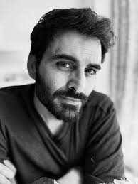

Manav Kaul
1976-Present
Indian theatre director, playwright, author, actor and filmmaker
Manav Kaul (born 19 December 1976) is an Indian theatre director, playwright, author, actor and filmmaker. He won the Filmfare OTT Award 2023 for Best Actor for the short film Phir Kabhi apart from being nominated for the same award in 2024 (Tribhuvan Mishra CA Topper) and 2021 (Ajeeb Daastaans). He was also nominated for the Filmfare Award for Best Supporting Actor for his role in the films Tumhari Sulu (2017) and Saina (2021).
Books
- Theek Tumhare Peechhe (2016): A popular collection of short stories.
- Tumhare Baare Mein: A poetic exploration of love, solitude, and unspoken words.
- Bahut Door, Kitna Door Hota Hai:An evocative travel account.
- Prem Kabootar (2017): A collection of short stories.
- Chalta Phirta Pret (2020):A novel dealing with themes of existentialism and isolation.
- Antima:A reflective novel written during the pandemic backdrop.
- Rooh:A deeply personal narrative/novel tracing his journey back to Kashmir.
- Karta Ne Karm Se:A notable work exploring human relationships and inner landscapes.
- Shirt Ka Teesra Button:A well-known collection of theatrical monologues and stories.
- Titli:An engaging novel.
- Tooti Hui Bhikhari Hui:A moving story collection focusing on human connections.
- Sakshatkar:A contemplative book centered on self-discovery.
- Patjhad:A character-driven narrative journey.
- Katranein:A collection of short literary pieces.SanyamNastik Ki Prarthana.